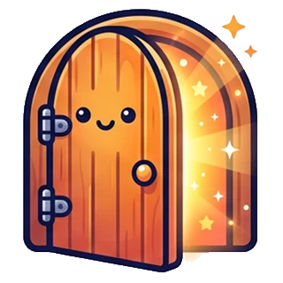

240نقطة
240نقطة
 خالد
خالد
الفردية
لطفل واحد يبدأ رحلته في عالم أجيال
/ شهرياً29
اشترك الآن- طفل واحد
- كل الجزر: المحتوى التعليمي والقصص والحروف والقرآن والألعاب وحديقة القيم
- الرسم والتلوين
- ورشة السحر: ٥ قصص أو فيديوهات في الشهر
- تحسين الرسم: ١٠ رسومات في الشهر
أنا نور! تعالوا نستكشف عالم أجيال
قصص وفيديوهات، حروف وأرقام، قرآن وألعاب وقيم، في جزر يتنقّل بينها طفلك مع نور. وأنت تتابع تقدّمه وتحدّد وقته اليومي من حسابك.
يتنقّل طفلك بين الجزر على خريطة واحدة، ولأغلب الجزر رفيق يرحّب به. اسحب أو اضغط على جزيرة لترى ما فيها.
يكسب طفلك النقاط عندما يُنهي شيئاً، لا عندما يفتح صفحة، فيرى ثمرة ما أنجزه.
نقاط عند إنهاء قصة أو حرف أو سورة أو لعبة، ومستوى بعد مستوى.
شارات يجمعها كلما أنجز.
يرى كم يوماً متتالياً زار فيه عالمه.
لوحة متصدرين واحدة حسب مجموع النقاط.
رسوماته وتلويناته وقصصه في مكان واحد.
أنت من يُنشئ الحساب ويضيف الأطفال، ولا يحتاج طفلك اسم مستخدم ولا كلمة مرور.
حساب ولي أمر لأسرتك، أو حساب مؤسسة لمدرستك أو حضانتك، دون اشتراط باقة مدفوعة عند التسجيل.
لكل طفل ملف باسمه وتاريخ ميلاده، فيُرتَّب له المحتوى حسب عمره.

تختار ملفه من حسابك، فيدخل عالمه ويبدأ من حيث توقف.
من لوحتك تتابع طفلك وتضبط ما يناسبه.
وتمدّه دقائق عند الحاجة لليوم نفسه.
تشغّل المتاح في باقتك أو توقفه، مثل ورشة السحر والمسابقات ورفع الصور.
ما يرسله طفلك للنشر يراجعه فريق المنصة أولاً.
يختار طفلك الفكرة من خيارات معدّة، من غير كتابة حرة.
تقدّم إرشادات معدّة مسبقاً بالصوت والكلمة.
ما أكمله وأهم نشاطاته، من غير مقارنة بغيره.
تشترك في باقة واحدة تضم مزاياها وحدودها، دون محفظة أو رصيد، ودون دفع منفصل لكل ميزة.
لطفل واحد يبدأ رحلته في عالم أجيال
/ شهرياً29
اشترك الآنلأكثر من طفل في الأسرة بحساب واحد
/ شهرياً59
اشترك الآنللمدارس والحضانات
/ شهرياً499
اشترك الآنيمكنك إنشاء حسابك أولاً واختيار الباقة لاحقاً. إذا انتهى اشتراكك لا تُحذف بيانات أطفالك ولا تقدّمهم ولا إبداعاتهم، ويمكنك التجديد أو الانتقال إلى باقة أخرى من الباقات المتاحة لك.
في النموذج: الأسعار والحدود للتوضيح، وتحدّدها إدارة المنصة.
حمّل التطبيق، وادخل بحسابك، ثم اختر ملف طفلك. ويكمل من حيث توقف، سواء دخل من التطبيق أو من الموقع.
الحساب واحد: تُنشئه مرة، وتستخدمه على التطبيق والموقع.
لا. أنت تُنشئ الحساب وتضيف ملفات أطفالك، ثم تختار ملف طفلك فيدخل عالمه، من غير اسم مستخدم ولا كلمة مرور له.
للأطفال من 3 إلى 15 سنة. يظهر لطفلك أولاً ما يناسب عمره، ولا يُخفى عنه باقي المحتوى بسبب عمره فقط.
نعم. تضع حداً يومياً لكل طفل، ويمكنك أن تمدّه دقائق إضافية لليوم نفسه عند الحاجة.
تبقى أعماله في «إبداعاتي» خاصة، تراها أنت من حسابك ولا تظهر لغيركما. وإذا أرسل عملاً للنشر، يراجعه فريق المنصة قبل أن يظهر.
لا. نور مرشدة تقدّم إرشادات وجملاً معدّة مسبقاً بالصوت والكلمة، وليست محادثة مفتوحة.
نعم. للمدارس والحضانات حساب مؤسسة، ويمكنها إضافة الأطفال دفعة واحدة بملف Excel.
نعم. يمكنك التصفح كزائر ومشاهدة المحتوى المتاح للزوار، من غير حفظ للنقاط أو التقدّم.